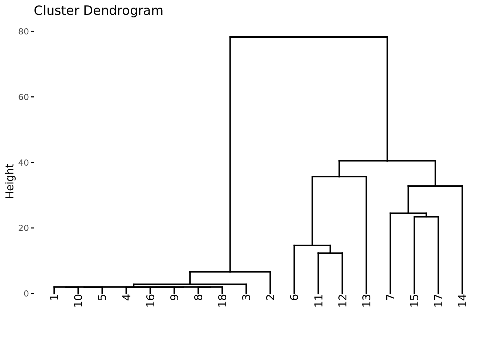
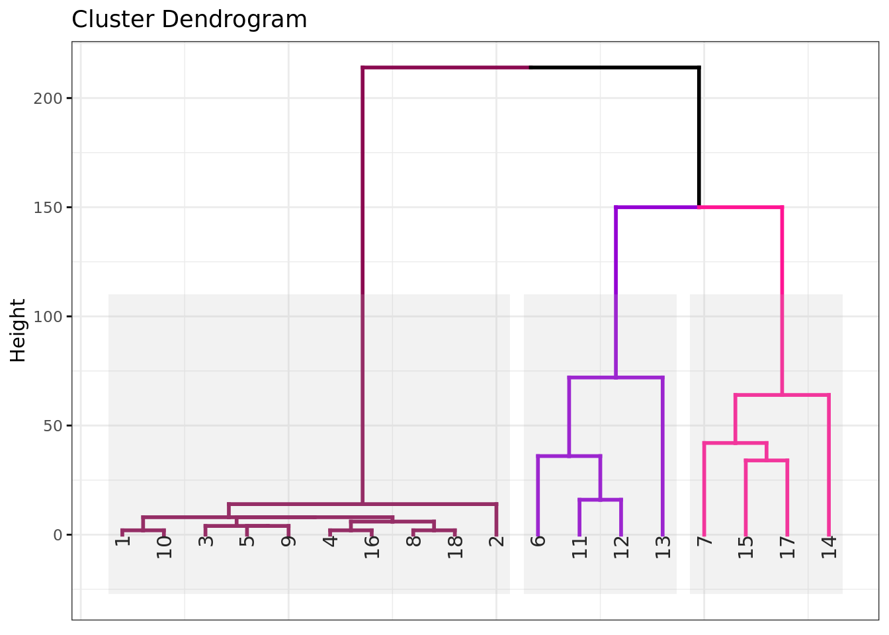

Aula: Unsupervised Machine Learning - Clustering II
Prof.: Wilson Tarantin Jr.
Fonte: Fávero e Belfiore, MANUAL DE ANÁLISE DE DADOS, Capítulo 09
Objetivo: clusterizar um dataset com 18 observações com 5 variáveis de uma rede varejista com 18 lojas, divididas em 3 regionais.
Preparação
Instalação e carregamento dos pacotes utilizados
pacotes <-c("plotly", #plataforma gráfica"tidyverse", #carregar outros pacotes do R"ggrepel", #geoms de texto e rótulo para 'ggplot2' que ajudam a #evitar sobreposição de textos"knitr", "kableExtra", #formatação de tabelas"reshape2", #função 'melt'"misc3d", #gráficos 3D"plot3D", #gráficos 3D"cluster", #função 'agnes' para elaboração de clusters hierárquicos"factoextra", #função 'fviz_dend' para construção de dendrogramas"ade4") #função 'ade4' para matriz de distâncias em var. bináriasif(sum(as.numeric(!pacotes %in%installed.packages())) !=0){ instalador <- pacotes[!pacotes %in%installed.packages()]for(i in1:length(instalador)) {install.packages(instalador, dependencies = T)break()}sapply(pacotes, require, character = T) } else {sapply(pacotes, require, character = T) }
Loading required package: plotly
Loading required package: ggplot2
Attaching package: 'plotly'
The following object is masked from 'package:ggplot2':
last_plot
The following object is masked from 'package:stats':
filter
The following object is masked from 'package:graphics':
layout
Loading required package: tidyverse
Warning in system("timedatectl", intern = TRUE): running command 'timedatectl'
had status 1
No estão as 18 lojas distribuiídas em 3 eixos: atendimento, organização e sortimento.
Conclusões a cerca das informações presentes no gráfico:
É possível em ver que no canto inferior esquerdo há um grupo de lojas que naturalmente formam um cluster: organização, atendimento e sortimento ruins.
Os pontos superiores em vermelhos (escuro e claro) parecem formar um segundo cluster e as outras lojas em azul e verde formal um terceiro cluster.
Estatísticas descritivas
summary(RegionalVarejista$atendimento)
Min. 1st Qu. Median Mean 3rd Qu. Max.
2.00 6.00 11.00 28.11 52.00 78.00
summary(RegionalVarejista$sortimento)
Min. 1st Qu. Median Mean 3rd Qu. Max.
2.00 4.00 6.00 27.89 51.50 86.00
summary(RegionalVarejista$organização)
Min. 1st Qu. Median Mean 3rd Qu. Max.
2.00 4.00 6.00 33.11 55.00 100.00
É possível observar que para as 3 variáveis as medianas se diferenciam muito da média, provavelmente provocadas por aquelas lojas em azul no gráfico 3D que possuem valore muito baixos.
Padronização
Neste caso, não faremos a padronização. As variáveis já estão na mesma escala
Esquema de aglomeração hierárquico
Matriz de dissimilaridades
Cria a matriz de distância usando o método euclidiano.
Vemos que várias observações se unem na altura 2. Provavelmente se referem àquelas
Na primeira linha, que é o estágio 1de aglomeração, a observação 8 foi juntada à observação 18 na altura 2.
Na segunda linha, que é o estágio 2 da aglomeração, a observação 4 foi juntada à observação 16 na altura 2.
A primeira vez que uma nova observação é adicionada a um cluster é na teceira linha, que é o estágio 3 da aglomeração, em que cluster gerado no estágio 2 é unido recebe a observação 9, também na altura 2.
Dendrograma
Construção do dendrograma
#dev.off()fviz_dend(x = cluster_hier)
Warning: `guides(<scale> = FALSE)` is deprecated. Please use `guides(<scale> =
"none")` instead.

Interpretação do gráfico
Vemos de fato a formação de um cluster formado pelas ligações abaixo da altura 6,6, onde a observação 2 se liga ao cluster, confirmando o gráfico 3D do início.
Fazendo um corte na altura do 39, temos 3 clusters, um em que a observação 13 é a última a ser adicionada ao cluster e outro em que a observação 14 é a última a ser adicionada em outro cluster.
O cluster 2 acaba ficando com lojas um pouco distintas, pois a observação se junta à ele numa altura muito alta, o que representa que ela é bem diferente.
Se o corte fosse traçado 33, os clusters ficariam mais homogêneos, com as obervações 13 e 14 formando clusters de uma única observação.
# A tibble: 3 × 5
cluster_H mean sd min max
<fct> <dbl> <dbl> <dbl> <dbl>
1 1 4.4 1.26 2 6
2 2 93 7.02 86 100
3 3 45 9.45 38 58
Análise das variáveis:
As lojas do cluster 1 possuem as menores médias nas 3 variáveis. São as lojas azuis no gráfico 3D do início deste documento.
As lojas do cluster 2 possuem notas médias no atendimento e no sortimento, mas se destacam na organização, enquanto as lojas do cluster 3 tem notas médias em atendimento e organização, mas se destacam no sortimento.
Conclui-se que para melhoria da rede, as lojas do cluster 1 precisam melhorar nos 3 quesitos, enquanto que as lojas do cluster 2 precisam melhorar no atendimento e no sortimento e o cluster 3 precisa melhorar em atendimento e organização.
Análise de variância de um fator (ANOVA)
Objetivo: verificar quais variáveis são importantes para a formação de pelo menos um cluster.
Basicamente trata-se verificar se o p-valor da tabela (na coluna Pr(>F)) é menor que 0,05 para que uma variável seja estatisticamente significante para formar um cluster.
Interpretação do output das ANOVAs das tabelas a seguir:
Passo1: a linha Mean Sq do cluster_H indica a variabilidade entre grupos. Trata-se da soma dos quadrados.
Passo2: a linha Mean Sq dos Residuals indica a variabilidade dentro dos grupos. Também é soma dos quadrados dos resíduos
Passo3: o F value é estatística de teste, oriunda da razão entre as médias (\(\dfrac{\text{Sum Sq do cluster\_H}}{\text{Sum Sq dos Residuals}\))
Passo 4: Pr(>F): p-valor da estatística F do passo 3
Se p-valor < 0.05: pelo menos um cluster apresenta média estatisticamente diferente dos demais
Passo 5: A variável mais discriminante dos grupos contém maior estatística F (e significativa)
Df Sum Sq Mean Sq F value Pr(>F)
cluster_H 2 23155 11578 403.5 9.1e-14 ***
Residuals 15 430 29
---
Signif. codes: 0 '***' 0.001 '**' 0.01 '*' 0.05 '.' 0.1 ' ' 1
P-valor= 9.1e-14, portanto menor que 0,05, o que significa que a variável organização é estatisticamente relevante para formar ao menos 1 cluster.
Em ordem de importância, a variável orgnanização é a que mais auxiliou na formação dos clusters, com uma estatística F de 403,5, seguida pela variável sortimento com uma estatística F de 110,2 e por fim a variável atendimento, com uma estatística F de 50,91.
Análise de Robustez
Vamos realizar uma análise de robustez do resultado anterior.
Vamos alterar a medida de distância de euclidiana para Manhattan e o método de encadeamento de single linkage para complete linkage.
Elaboração da matriz de distâncias com a distância de ‘Manhattan’
Warning: `guides(<scale> = FALSE)` is deprecated. Please use `guides(<scale> =
"none")` instead.

Adicionando a variável ao banco de dados
RegionalVarejista$cluster_H_man <-factor(cutree(tree = cluster_hier_man, k =3))
Para este caso, gera exatamente o mesmo resultado, o que significa que é uma clusterização robusta, isto é, que não se altera de acordo com o tipo de distância e o método de linkage escolhidos.
Esquema de aglomeração não hierárquico K-MEANS
O KMeans minimiza a soma dos quadrados internos de cada cluster.
Elaboração da clusterização não hieráquica k-means
Realizando a clusterização usando o número de clusters definidos na clusterização hierárquia como parâmetro de entrada no KMeans.
É possível observar que há uma susbtancial queda na soma dos quadrados internos das observações até a quantidade de clusters ser 3, a partir disso o aumento na quantidade clusters não altera muito.
Observa-se que os membros dos clusters pela clusterização hierárquica são os mesmo que os dos clusters definidos por KMeans, que por sua vez são os mesmos determinados pelas regionais.
Análise de variância de um fator (ANOVA)
Utilizando ANOVA para verificar quais variáveis foram relevantes para a formação de pelo menos 1 cluster.
Df Sum Sq Mean Sq F value Pr(>F)
cluster_K 2 18548 9274 27.61 9.38e-06 ***
Residuals 15 5038 336
---
Signif. codes: 0 '***' 0.001 '**' 0.01 '*' 0.05 '.' 0.1 ' ' 1
Conclusão: como na clusterização hierárquica, as 3 variáveis são relevantes para a formação de ao menos um cluster (todas com Pr(>F) menor que 0,05), sendo a mais relevante é a organização (com maior F value - 403,5) e a variável atendimento (com menor F value - 50,91) é a menos relevante.
Comparando os resultados dos esquemas hierárquico e não hierárquico